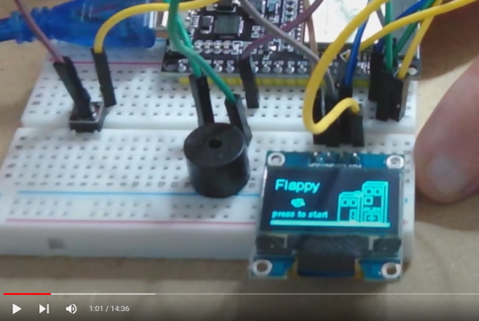
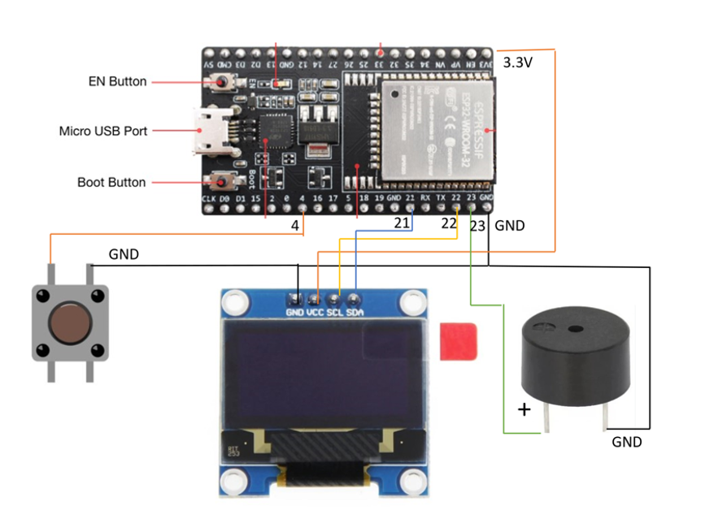

בונים ערכה בידיים, ומתכנתים אותה עם בינה מלאכותית לצידכם.Build a kit with your hands, then program it with an AI by your side.
מחברים מחשב קטן, מסך, כפתור וזמזם על לוח ניסויים, ומשחק Flappy עולה מיד. משם, צ'אט בתוך VS Code מתקין הכול, בודק את הערכה, ובונה איתכם כל משחק או רעיון שתדמיינו, ומסביר תוך כדי.Wire a tiny computer, a screen, a button and a buzzer on a breadboard, and a Flappy game starts right away. From there, a chat inside VS Code installs everything, checks your kit, and builds any game or idea you imagine with you, explaining as it goes.
עודכן לאחרונה 24 באוקטובר 2026 · 5 לקחים חדשים · מה חדש ←Last updated 24 October 2026 · 5 new lessons · See what's new →
מה יש בערכהWhat's in the kit
ארבעה חלקים, בלי הלחמה. מספיק כדי לבנות משחקים, מוזיקה, שעונים וגאדג'טים מחוברים לאינטרנט.Four parts, no soldering. Enough for games, music, clocks and internet gadgets.
ESP32ESP32
מחשב זעיר עם שני מעבדים, WiFi ו-Bluetooth. מתחבר ב-USB.A tiny computer with two cores, WiFi and Bluetooth. Connects over USB.
מסך OLEDOLED screen
128 על 64 נקודות לבנות. מספיק לציורים, טקסט ואנימציה.128 by 64 white dots. Enough for drawings, text and animation.
כפתור אחדOne button
לחיצה, החזקה, לחיצה כפולה. האתגר: לעצב משחק עם כפתור אחד.Tap, hold, double-tap. The challenge: design a game for one button.
זמזםBuzzer
צלילים, אפקטים ומנגינות.Beeps, sound effects and tunes.
שלב 1: בונים את הערכהStep 1: build the kit
עקבו אחרי הסרטון והחיבורים. כשמחברים ל-USB, משחק Flappy עולה. אם הציפור עפה כשלוחצים, הכול מחובר נכון.Follow the video and the wiring. Plug it into USB and Flappy starts. If the bird flies when you press, everything is wired right.

החיבוריםThe wiring
| מ...From | לפין ב-ESP32To ESP32 pin |
|---|---|
| מסך GNDScreen GND | GND |
| מסך VCCScreen VCC | 3V3 |
| מסך SCLScreen SCL | 22 |
| מסך SDAScreen SDA | 21 |
| כפתור, רגל אחתButton, one leg | 4 |
| כפתור, הרגל שמנגדButton, the leg across | GND |
| זמזם +Buzzer + | 23 |
| זמזם, הרגל השנייהBuzzer, other leg | GND |
בטיחות:Safety: מנתקים את ה-USB לפני שמזיזים חוט. המסך מתחבר ל-3V3, אף פעם לא ל-5V. שום דבר לא אמור להתחמם: אם משהו מתחמם, מנתקים ובודקים את החיבורים.Unplug USB before moving any wire. The screen goes to 3V3, never 5V. Nothing should get warm: if something does, unplug and check the wiring.
כבל USB חייב להעביר נתונים. יש כבלים שרק מטעינים, ונראים בדיוק אותו דבר.The USB cable must carry data. Some cables only charge, and look exactly the same.
שלב 2: מכינים את המחשב (פעם אחת, כ-20 דקות)Step 2: get your computer ready (once, about 20 minutes)
רק את הדברים האלה עושים לבד. מכאן והלאה הצ'אט עושה את העבודה ומסביר לכם מה ללחוץ. Windows מומלץ.These are the only things you do yourself. From then on the chat does the work and tells you what to click. Windows recommended.
התקינו את VS CodeInstall VS Code
עורך הקוד. מורידים מ-The code editor. Download from code.visualstudio.com ומתקינים עם ברירות המחדל. and install with the defaults.
הוסיפו צ'אט בינה מלאכותית (אחד מהשניים)Add an AI chat (one of the two)
- Claude Code: ב-VS Code, Extensions (אייקון ארבעת הריבועים) ← מחפשים "Claude Code" ← Install ← נכנסים עם חשבון Claude.Claude Code: in VS Code, Extensions (the four-squares icon) → search "Claude Code" → Install → sign in with a Claude account.
- GitHub Copilot: צריך חשבון GitHub חינמי. נכנסים ל-GitHub ב-VS Code, פותחים את הצ'אט ובוחרים מצב Agent.GitHub Copilot: needs a free GitHub account. Sign in to GitHub in VS Code, open the chat and choose Agent mode.
עובד כשכותבים hello והצ'אט עונה.It works when you type hello and the chat answers.
התקינו את GitInstall Git
הכלי שמעתיק את הפרויקט למחשב. מורידים מ-The tool that copies the project to your computer. Download from git-scm.com, מתקינים עם ברירות המחדל, וסוגרים ופותחים מחדש את VS Code., install with the defaults, then close and reopen VS Code.
העתיקו את הפרויקט ופתחו אותוCopy the project and open it
ב-VS Code: Terminal ← New Terminal. מקלידים כל שורה ולוחצים Enter:In VS Code: Terminal → New Terminal. Type each line and press Enter:
mkdir C:\kit
cd C:\kit
git clone https://github.com/avisalmon/SingleButtonKitBKM.git
code SingleButtonKitBKMנפתח חלון חדש של VS Code. לוחצים "Yes, I trust the authors".A new VS Code window opens. Click "Yes, I trust the authors".
פתחו את הצ'אט בחלון החדש וכתבו:Open the chat in the new window and type:
זהו. מכאן הצ'אט מוביל: מתקין Python והכלים, מוצא את הערכה, בודק את המסך, הכפתור והזמזם, ובונה איתכם את התוכנית הראשונה. חוזרים מחר? כותבים את אותו משפט, והוא ממשיך מאיפה שעצרתם.That's it. From here the chat leads: it installs Python and the tools, finds the kit, checks the screen, button and buzzer, and builds your first program with you. Back tomorrow? Type the same sentence and it continues where you stopped.
מי עושה מהWho does what
אתם מחליטים מה לבנות. הצ'אט עושה את השאר, ומסביר למה.You decide what to build. The chat does the rest, and explains why.
| אתםYou | הצ'אטThe chat |
|---|---|
| בונים את הערכה ורואים את Flappy עובדBuild the kit and see Flappy run | מתקין Python, PlatformIO ודרייבר USBInstalls Python, PlatformIO and the USB driver |
| מתקינים VS Code, Git וצ'אט, ומעתיקים את הפרויקטInstall VS Code, Git and a chat, and copy the project | מוצא את הערכה ובודק כל חלק בהFinds the kit and checks every part of it |
| לוחצים "כן" בהתקנות, לוחצים על הכפתור כשמבקשיםClick "Yes" on installers, press the button when asked | כותב את הקוד, מעלה אותו לערכה ומתקן שגיאותWrites the code, uploads it to the kit and fixes errors |
| מדמיינים, מחליטים, ומשנים את הקוד בעצמכםImagine, decide, and change the code yourself | מלמד תוך כדי: מראה איזו שורה עושה מה, ונותן אתגרים קטניםTeaches as it goes: shows which line does what, and gives small challenges |
מה אפשר לבנותWhat you can make
כמה רעיונות להתחלה. או שתביאו רעיון משלכם.A few ideas to start with. Or bring your own.
רוצים לתכנת הכול בעצמכם?Want to program it all yourself?
לצד הבינה המלאכותית יש קורס מלא לתכנות הערכה הזו ביד, ב-MicroPython: מציור קו ראשון ועד פונג, נחש ו-Space Invaders.Alongside the AI there is a full course for programming this kit by hand, in MicroPython: from a first line on the screen to Pong, Snake and Space Invaders.
טוב לדעתGood to know
תמיד מתעדכןAlways up to date
המדריך משתפר כל הזמן. בכל פעם שפותחים צ'אט, הוא מושך קודם את הגרסה החדשה. הפרויקטים שלכם נשמרים בתיקייה my_projects, ועדכונים לא נוגעים בה.The guide keeps improving. Every session, the chat first pulls the newest version. Your projects live in my_projects, which updates never touch.
Flappy תמיד חוזרFlappy always comes back
העלאת תוכנית מחליפה את המשחק שעל הערכה. כותבים "תחזיר את פלאפי" והוא חוזר, בדיוק כמו שהיה.Uploading a program replaces the game on the kit. Type "Restore Flappy" and it comes back, exactly as it was.
להורים ולמוריםFor parents and teachers
לשירותי בינה מלאכותית יש מגבלות גיל: מבוגר פותח את החשבון ונשאר בסביבה. הצ'אט לא מבקש פרטים אישיים. לסשנים ארוכים בדרך כלל צריך מנוי בתשלום לשירות הבינה המלאכותית.AI services have age limits: an adult opens the account and stays nearby. The chat never asks for personal details. Long sessions usually need a paid plan for the AI service.